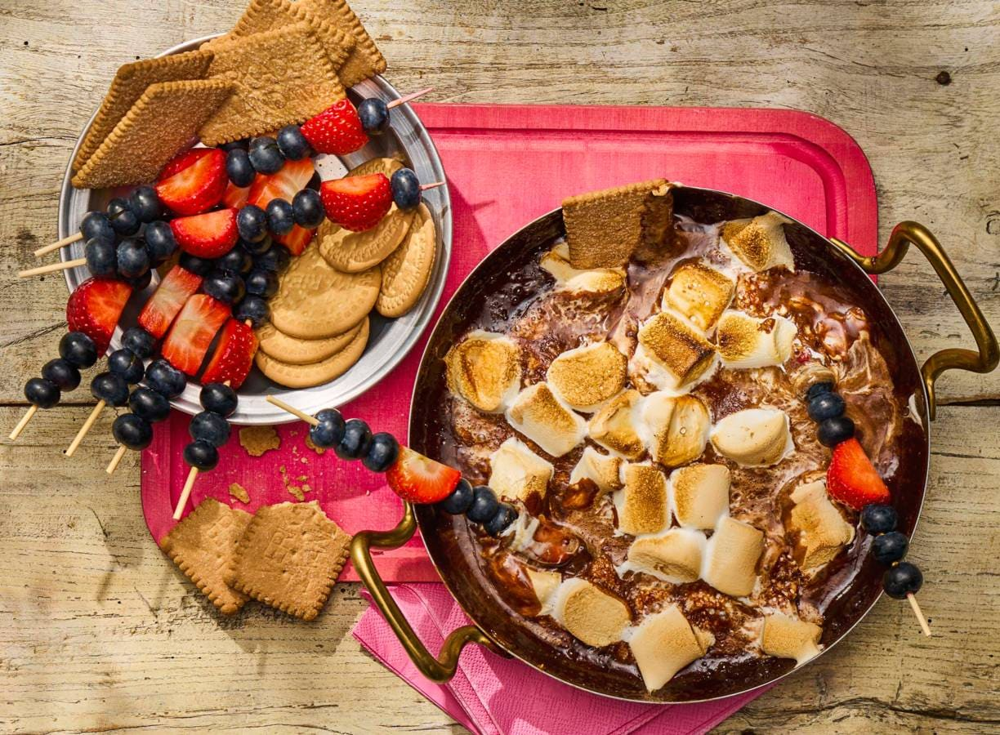

marshmallow-chocodip van de BBQ

Houd bij de BBQ vooral een plekje in je buik vrij voor deze lekkernij: een marshmallow-chocodip! Gemaakt met alle ingrediënten voor s'mores: chocolade, marshmallows en koekjes om te dippen.
voorbereidingstijd:
wacht tijd:
totaal tijd:
- MIN
- MIN
15 MIN
ingrediënten
- 200 g verse blauwe bessen
- 200 g verse aardbeien
- 250 g marie-biscuits
- 150 g melkchocolade
- 50 g pure chocolade
- 275 g bbq marshmallows
- 50 ml volle melk
kook stappen
- Steek de barbecue aan. Rijg de bessen en aardbeien aan de prikkers en leg met de koekjes op een schaal.
- Hak de melk- en pure chocolade grof en doe samen met 200 g marshmallows (per 8 personen) en de melk in de pan. Zet de pan op de barbecue en laat het mengsel in 3 min. smelten terwijl je roert met een spatel.
- Scheur de rest van de marshmallows in grove stukken. Verdeel over het marshmallow-chocolademengsel en bak 5 min. met de deksel op de pan op de barbecue, tot de marshmallows kleuren. Serveer met de fruitspiesjes en marie-biscuits.